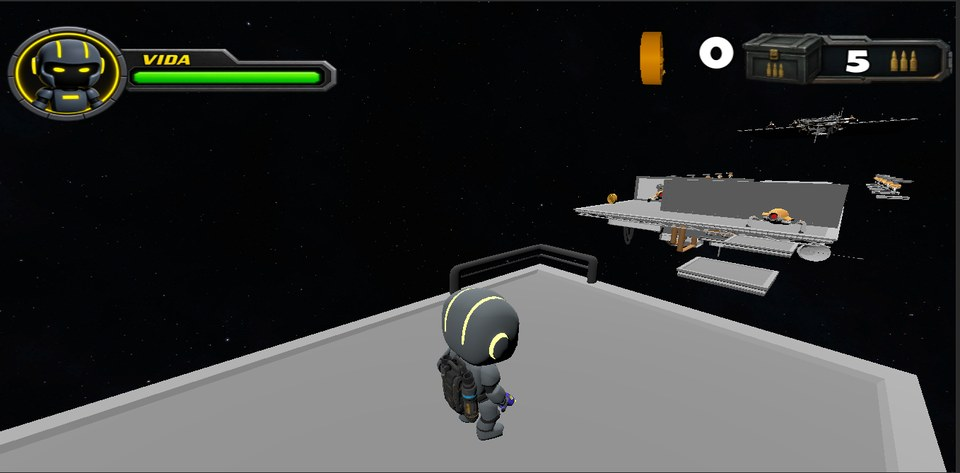
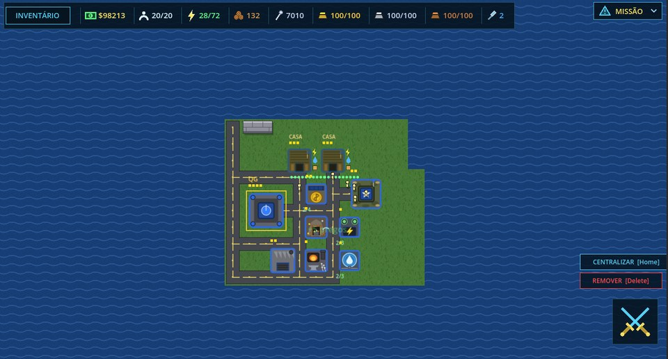
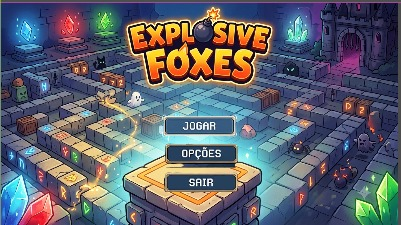

Meus Jogos
4 TÍTULOS
The Guardian
Em DesenvolvimentoAção / Arcade
Jogo 3D de ação em que você controla um pequeno robô guardião, enfrentando perigos e desafios pelo caminho.
Jogar no itch.io
Ping Pong 2D
Em DesenvolvimentoEsporte / Arcade
Ping pong em 2D com partidas rápidas, fáceis de aprender e difíceis de largar.
Jogar no itch.io
Iron Vanguard
Demo DisponívelEstratégia / RTS
Estratégia em tempo real com tanques numa ilha: construa bases, junte recursos e monte sua defesa e seu ataque para dominar o mapa.
Jogar no itch.io
Explosive Foxes
Em DesenvolvimentoAção / 3D
Jogo 3D de ação cheio de explosões, com raposas, caos e fases desafiadoras.
Jogar no itch.io